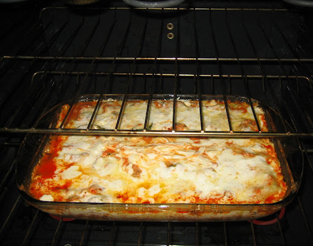

Garfield's Worthy Lasagna

Don't you dream of being fat asf like good 'ol Garfield? Cos I fucking do.
I got you, bro. Here's what you need.
Ingredients:
- 1 pkg barrilla no boil homestyle lasagna noodles
- 1 batch of homemade spaghetti sauce (or any fucking sauce, idc and neither does Garfield)
- 16 oz sliced mushrooms
- 1 lb each hamburger and loose italian sauce
- 32 oz ricotta cheese
- 16 oz shredded mozzarella cheese (or more cos who's stopping you?)
Here's what you need to do, you dumb fuck:
- In a 9 x 13 glass baking dish place enough of the sauce to cover the bottom.
(Adding the sauce to the pan before meats and mushrooms allows for a flat surface to build from.)
Then cook meats and add to spaghetti sauce mixture along with package of mushrooms.
- Start your fist layer by placing 4 sheets of lasagna noodles,
top with half of the ricotta cheese, half of the sauce, and a layer of mozzarella cheese.
- Repeat layers until pan is full.
- Bake covered with foil for 1 hour. Remove foil and bake for about 10 minutes to allow top cheese to brown.
Let sit for at least 5 to 10 minutes to allow for cooling
(please don't skip this step if you do you will have a lasagna mess instead of clean slices.)
Back to recipes